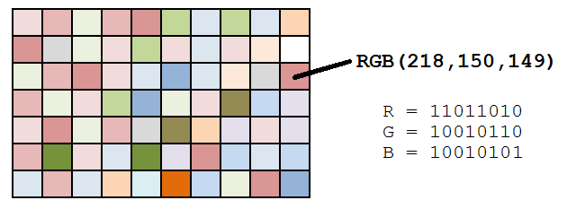
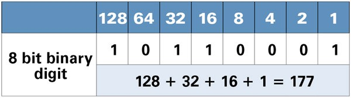

La esteganografía (del griego στεγανος steganos, "cubierto" u "oculto", y γραφος graphos, "escritura") trata el estudio y aplicación de técnicas que permiten ocultar mensajes u objetos, dentro de otros, llamados portadores, de modo que no se perciba su existencia.
Wikipedia
Least significant bit
**
pipenv install Stego
from stegano import lsb secret = lsb.hide("./logo.png", "Hello world!") secret.save("./logo-secret.png")
from stegano import lsb print(lsb.reveal("./logo-secret.png"))